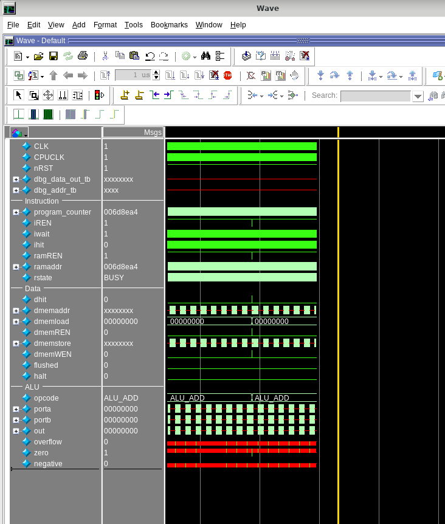
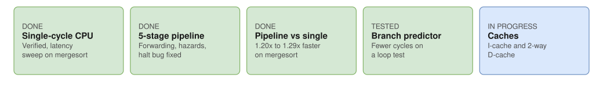

CPU design · Purdue ECE 437 · Aug 2026 to present In progress
RISC-V Processor
I built a 32-bit RISC-V CPU twice, as a single-cycle design and as a five-stage pipeline, and compared them on the same program to measure what pipelining really gains.
My partThe forwarding unit, the interfaces and integration of the five stages, the halt fix, and the branch-predictor logic. This is a pair project with Minseok Kim, who wrote the hazard unit, the assembly test programs and the forwarding-unit testbench.
Swipe to view the full diagram →
Swipe to view the full diagram →
My workPartner or shared work
Pipeline against single-cycle
Both designs ran the same program, mergesort on 64 words (5,409 instructions), at four memory latencies. Cycle counts come from simulation and the clock from synthesis, so execution time is cycles divided by frequency. The pipeline needs more cycles per instruction, but its clock is about 1.6× faster, and that wins.
Where the extra cycles go
The pipeline took 3,830 more cycles than instructions at latency 0. About 857 taken branches and jumps cost two flush cycles each, roughly 1,700 cycles, and 679 load-use dependences cost one stall each. Branches resolve in execute, so a taken branch costs two bubbles, not three.
What memory does to both
At latency 10 the cycles per instruction are above 7 for both designs, so the core spends most of its time waiting for memory. That is why caches and a branch predictor are the next steps.
Cycle counts come from simulation and clock frequencies from synthesis. The script only synthesizes latency 0 and 2, so the frequencies for latency 6 and 10 are copied from latency 2.
The bug the unit tests did not catch
The hardest problem was not in any single block. Every unit testbench passed, and the pipeline still misbehaved once the blocks were connected.
What I saw
With the units connected in the full pipeline and run through the system testbench, the simulation never finished. Instruction fetch stayed active, the program counter ran far past the end of the program, and the data signals went unknown.
Why the unit tests missed it
A unit testbench checks one block's outputs for the inputs it is given. Halt is not a property of one block. It depends on how the halt signal, the instruction fetch and each stage's enable and flush behave together.
The fix
I reworked the halt logic and adjusted the flush and enable signals. A halt seen in decode lets the instructions already in flight finish while the PC stops and fetching is disabled. Once the halt reaches write-back it is latched, and the whole datapath stops cleanly.
What I took from it
Passing each check in isolation did not prove that the whole flow worked. I now verify at every level: the unit, the connected units, and then complete programs, one change at a time.

BeforePC and fetch continue past the program; the simulation does not terminate correctly.Branch predictor
A taken branch costs two flush cycles, the biggest hazard cost in the pipeline. I completed the logic of an optional predictor that guesses the next fetch address before the branch is resolved.
How it works
A 16-entry branch target buffer stores the address of each branch and its target. A 2-bit counter per entry moves between strongly not taken and strongly taken, so one odd outcome does not flip the guess.
What I measured
On a loop test the run drops from 212 to 116 cycles at memory latency 0, about 1.8× fewer. The CPU clock limit falls from 79.1 to 68.6 MHz, so by cycles divided by clock the loop still finishes about 1.6× sooner.
What is still open
68.6 MHz is just under the 70 MHz lab target, and I have not run mergesort with the predictor. Both come next. My partner wrote the predictor's testbench and its assembly program.
Caches
Memory latency is now the biggest cost, so the next lab adds an instruction cache and a data cache between the pipeline and memory.
What is in the repository
A 16-entry direct-mapped instruction cache that refills from memory on a miss, and a data cache with 8 sets of 2 ways, least-recently-used replacement and a flush state machine.
Where it stands
The source is written and being tested, and there are no cache results yet. The lab asks for a clock of at least 65 MHz at latency 0 once the caches are in.
Pair project. My partner, Minseok Kim, wrote the assembly test programs, the hazard unit and the forwarding-unit testbench, extended the control unit and worked on timing to reach 70 MHz. In this course each of us designed one unit and wrote the testbench for the other's. Figures and numbers are from our midterm report and sweep reports.
The detailed datapath, in four views
The whole datapath is Fig. 1 at the top. It is dense, so here are the four parts that matter most: forwarding, stalls and flushes, branch resolution, and memory hold and halt. Click any view for the full datapath.
Forwarding
A forwarding unit compares source registers against the destinations still in flight and drives three-input muxes, so an operand can come from the register file, the EX/MEM stage or the MEM/WB stage without waiting for write-back.
Stalls and flushes
The hazard unit stalls on a load-use hazard, holding the PC and the IF/ID register and flushing ID/EX. Each pipeline register has its own enable and flush logic, which also account for memory-ready and halt.
Branches resolve in execute
Branch control evaluates the six branch types in the execute stage. When a branch or jump is taken, the control-taken logic redirects the PC and squashes the wrong-path instructions behind it.
Memory hold and halt
Memory-ready logic holds the pipeline while memory is busy, and a halt register with halt-pending logic stops it cleanly. That is what lets the design work with variable-latency memory.
What carries over to process integration
The halt bug taught me to trace one signal across every stage, and the clock-against-cycles trade-off taught me to judge a change by the total result, not by one metric.
Swipe to view the full diagram →
Swipe to view the full diagram →
